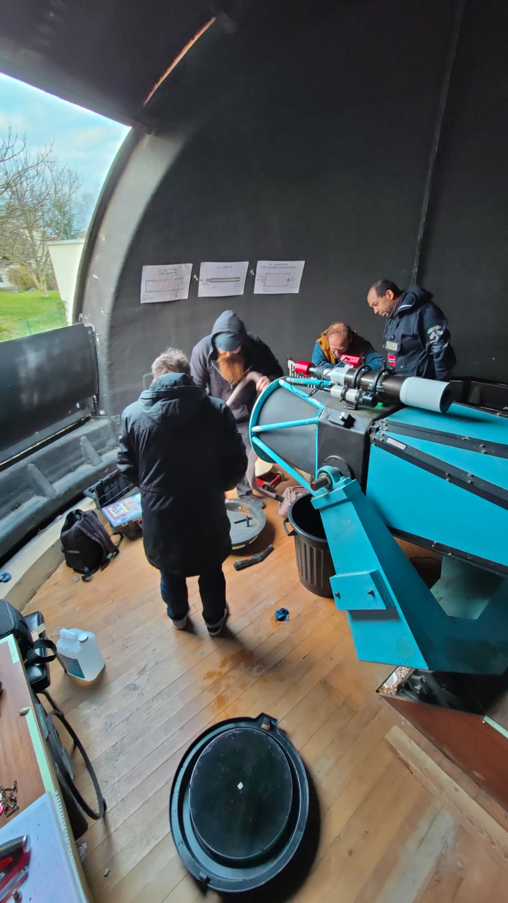
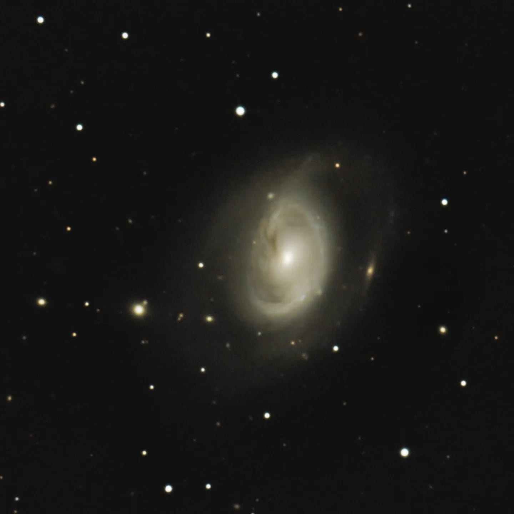
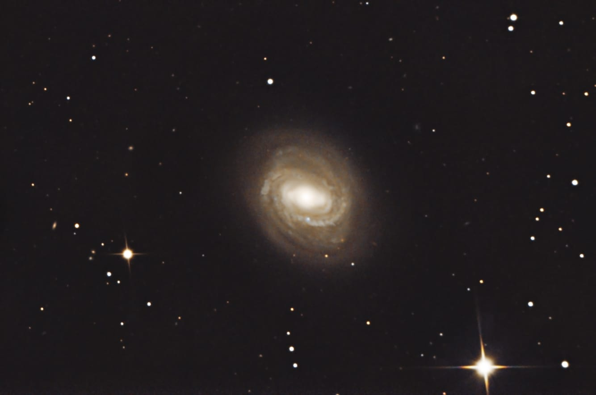

La comète C2022 E3 ZTF. 133 brutes + DOFS de 15 secondes à ISO 4500 prise avec un appareil PENTAX KX sur 200/1000 NEQ5 motorisé AD et DEC sans goto. Traitement SIRIL/PHOTOSHOP.

La nébuleuse des tétards IC410. 93 brutes + DOFS de 120 secondes prise avec l'ASI294MC pro ASIAIR sur sur une lunette 80ED. Traitement SIRIL/PHOTOSHOP. Remerciements particulier au planetarium de Reims pour le prêt du matériel.

La nébuleuse de la tête de cheval IC484. 35 brutes de 120 secondes sans DOFS prise avec l'ASI294MC pro ASIAIR sur sur une lunette 80ED. Traitement SIRIL/PHOTOSHOP. Remerciements particulier au planetarium de Reims pour le prêt du matériel.

L'amas d'Hercule M13. 60 brutes + DOFS de 15 secondes à ISO 800 prise avec un PENTAX KX sur 200/1000 NEQ5 motorisé AD et DEC sans goto. Traitement SIRIL/PHOTOSHOP.

L'amas ouvert M35. 23 brutes sans DOFS de 120 secondes prise avec l'ASI294MC pro ASIAIR sur sur une lunette 80ED. Traitement SIRIL/PHOTOSHOP. Remerciements particulier au planetarium de Reims pour le prêt du matériel.

La nébuleuse d'Orion M42. 30 brutes + DOFS de 20 secondes à ISO400 prise avec un PENTAX KX sur 200/1000 NEQ5 motorisé AD et DEC sans goto. Traitement SIRIL/PHOTOSHOP.

La galaxie du tourbillon M51. 70 brutes + DOFS de 15 secondes à ISO800 prise avec un Canon 1000d défiltré full spectrum sur 200/1000 NEQ5 motorisé AD et DEC sans goto. Traitement SIRIL/PHOTOSHOP.

La galaxie M58. 192 brutes + DOFS de 30 secondes prise avec ASI183MC sur T410/2460 sous la coupole de l'observatoire de Beine-Nauroy. Traitement SIRIL/PHOTOSHOP. Remerciement au Planetarium de Reims pour le prêt de sa caméra.

Le double amas de Persée. 20 brutes sans DOFS de 60 secondes prise avec l'ASI294MC pro ASIAIR sur sur une lunette 80ED. Traitement SIRIL/PHOTOSHOP. Remerciements particulier au planetarium de Reims pour le prêt du matériel.

La nébuleuse de la tête de singe NGC2174. 62 brutes + DOFS de 120 secondes prise avec l'ASI294MC pro ASIAIR sur sur une lunette 80ED. Traitement SIRIL/PHOTOSHOP. Remerciements particulier au planetarium de Reims pour le prêt du matériel.

Photographie solaire. Capturé au PENTAX KX avec barlow x2 au foyer du coronado du planétarium de Reims.

La Lune gibeuse. 60 brutes de 1/200 secondes à ISO100 prise avec un PENTAX KX sur 200/1000 NEQ5 motorisé AD et DEC sans goto. Traitement PIPP/Autostakert/Registax/PHOTOSHOP.

Le cratère Copernic pris avec un Touptek g-1200 KPB sur 200/1000 Neq5 motorisée AD et DEC sans goto.
Traitement PIPP / Autostakert / Registax / Photoshop.

Le 25 février, les membres de l'association ont démonté le miroir primaire du T410 pour le nettoyer et réparer le barillet.
 
A peine remis en service, M96 et M58 ont été attrapée par Fabien à l'aide d'une caméra refroidie !